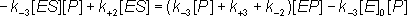
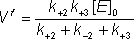
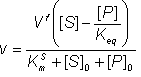
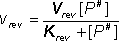

|
|
Reversible reactionsA reversible enzymic reaction (e.g., the conversion of glucose to fructose, catalysed by glucose isomerase) may be represented by the following scheme where the reaction goes through the reversible stages of enzyme-substrate (ES) complex formation, conversion to enzyme-product (EP) complex and finally desorption of the product. No step is completely rate controlling. [1.12] Pairs of symmetrical equations may be obtained for the change in the concentration of the intermediates with time: (1.36)
Assuming that there is no denaturation, the total enzyme concentration must remain constant and: (1.38a) therefore: (1.38b) gathering terms in [ES] (1.39a) and, (1.38c) gathering terms in [EP] (1.40a) Under similar conditions to those discussed earlier for the Michaelis-Menten mechanism (e.g., under the steady-state assumptions when both d[ES]/dt and d[EP]/dt are zero, or more exactly when and are both true. The following equations may be derived from equation 1.39b using the approximation, given by equations 1.41 and collecting terms.
Also, the following equations (symmetrical to the above) may be derived from equation 1.40b by using the approximation, given by equation 1.42, and collecting terms.  (1.44b) Substituting for [ES] from equation 1.44c into equation 1.43a (1.43d) (1.43e) (1.43f) Removing identical terms from both sides of the equation: (1.43g) Gathering all the terms in [EP]: (1.43h) Also, substituting for [EP] from equation 1.43c into equation 1.44a (1.44d) (1.44e)
Removing identical terms from both sides of the equation: (1.44g) Gathering all the terms in [ES]: (1.44h) The net rate of reaction (i.e., rate at which substrate is converted to product less the rate at which product is converted to substrate) may be denoted by v where, (1.45) Substituting from equations 1.43i and 1.44i (1.46a) Simplifying: (1.46b) Therefore, where:  (1.48) (1.49) (1.50) (1.51) At equilibrium: (1.52) and, because the numerator of equation 1.47 must equal zero, where [S]¥ and [P]¥ are the equilibrium concentrations of substrate and product (at infinite time). But by definition, Substituting from equation 1.53 This is the Haldane relationship. Therefore: (1.56) If KmS and KmP are approximately equal (e.g., the commercial immobilised glucose isomerase, Sweetase, has Km(glucose) of 840 mM and Km(fructose) of 830 mM at 70°C), and noting that the total amount of substrate and product at any time must equal the sum of the substrate and product at the start of the reaction: (1.57) Therefore:  (1.58) Therefore: where: (1.60) K' is not a true kinetic constant as it is only constant if the initial substrate plus product concentration is kept constant. Also, (1.61) Substituting from equation 1.54, (1.62) Let [S#] equal the concentration difference between the actual concentration of substrate and the equilibrium concentration. (1.63) Therefore: (1.64) Substituting in equation 1.47 (1.65) Rearranging equation 1.55, (1.66) Therefore: (1.67)
Therefore: Where (1.69) Therefore: (1.70) Therefore: (1.71) and: (1.72) As in the case of K' in equation 1.59, K is not a true kinetic constant as it varies with [S]¥ and hence the sum of [S]0 and [P]0. It is only constant if the initial substrate plus product concentration is kept constant. By a similar but symmetrical argument, the net reverse rate of reaction,  (1.73) with constants defined as above but by symmetrically exchanging KmP with KmS, and Vr with Vf. Both equations (1.59) and (1.68) are useful when modelling reversible reactions, particularly the technologically important reaction catalysed by glucose isomerase. They may be developed further to give productivity-time estimates and for use in the comparison of different reactor configurations (see Chapters 3 and 5). Although an enzyme can never change the equilibrium position of a catalysed reaction, as it has no effect on the standard free energy change involved, it can favour reaction in one direction rather than its reverse. It achieves this by binding strongly, as enzyme-reactant complexes, the reactants in this preferred direction but only binding the product(s) weakly. The enzyme is bound up with the reactant(s), encouraging their reaction, leaving little free to catalyse the reaction in the reverse direction. It is unlikely, therefore, that the same enzyme preparation would be optimum for catalysing a reversible reaction in both directions.
This page was established in 2004 and last updated by Martin
Chaplin |
 (1.44f)
(1.44f)